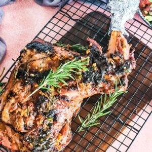

Nyama choma Recipe

This is the ultimate mbuzi nyama choma recipe! Goat meat is marinated in a flavourful herb and spice marinade, and then slowly grilled, to give you some tender, and delicious meat that you will certainly love!!
Ingridients
- Meat: this recipe uses a whole bone-in goat leg but works well with spare ribs, pork, chicken (Kuku choma), beef, mutton, or lamb. Adjust cooking times based on the meat type to avoid overcooking.
- Vegetables: fresh ginger, garlic, onion and, bird eye chillis (optional).
- Spices: cumin, paprika, and stock cubes.
- Fruit: lemon juice (easily substitutable with lime juice).
- Condiments/other: honey, cooking oil, paprika powder, and salt.